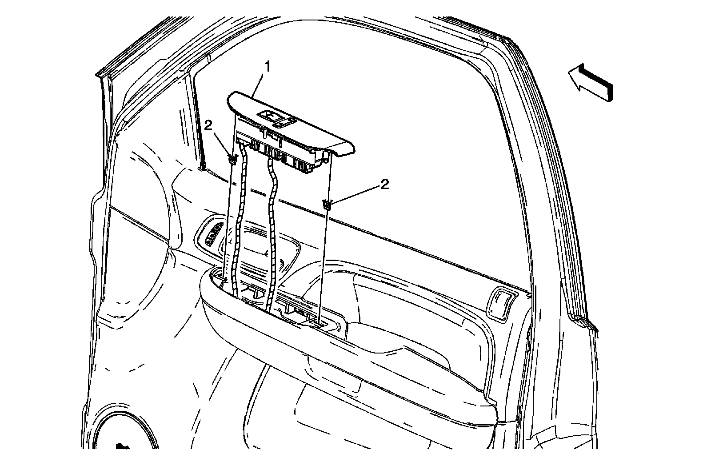
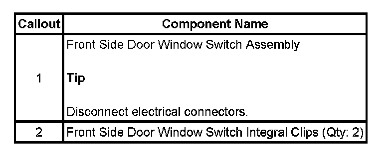

Operation CHARM
: Car repair manuals for everyone.
Home
>>
Cadillac
>>
2007
>>
Escalade ESV AWD V8-6.2L
>>
Repair and Diagnosis
>>
Body and Frame
>>
Locks
>>
Power Locks
>>
Power Door Lock Switch
>>
Service and Repair
>>
Door Lock and Side Window Switch Replacement - Passenger Side
Door Lock and Side Window Switch Replacement - Passenger Side
DOOR LOCK AND SIDE WINDOW SWITCH REPLACEMENT - PASSENGER

